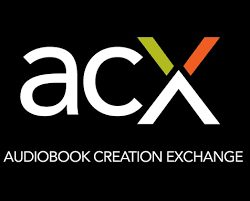
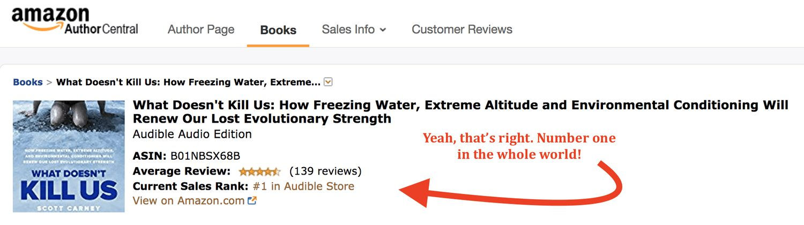
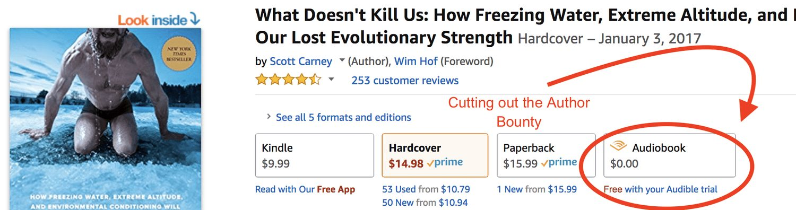

I’m going to have to get into the weeds about audiobooks for a moment because they’re one of the most important tools that a writer has to make a steady living. And, unfortunately, in the last week some changes in the marketplace make it seem that some of the potential profits are going to get sucked away.
First the good.
When What Doesn’t Kill Us came out I made a sort of radical decision to skip the mainstream audio publishers to record and self-produce my own audiobook. It turned out to be one of the smartest decisions that I ever made. I listed the book through ACX.com, a subdivision of Audible.com that caters to self-published authors. The advantage of self-publishing was that I would earn a lot better royalty rate–40% where most mainstream publishing contracts are 12.5%. ACX sends me checks every month, not every quarter, or every six months like most publishers do. It hasn’t made me rich, but audiobooks account for about 50% of what I make today.Not only that, but ACX had an offer that sweetened the deal. It was something called “Bounties”. Bounties are essentially a reward for bringing new customers into Audible and they are a big part to why Audible has been able to corner the audiobook market. The way it worked was that for every customer who downloaded my book first on Audible, and then maintained their subscription for 61 days, they would give me $50.Over the last year and a half I’ve earned 533 bounties for a total of $26,650. Yeah. That’s pretty good money.Overall I’ve been ecstatic about my experience with ACX.com. It’s given me real access to publishing profits, a steady income and allows me to reach an audience who print doesn’t appeal to. Not only that, but I got to read the audiobook myself. ACX also ran a few promotions on behalf of “What Doesn’t Kill Us” that made it the number one book on the planet for two days.

Because they’ve been so awesome, I’ve gone to the mat for ACX. I’ve told all of my friends who are writing books to do everything they can to hold onto their audio rights and self publish through ACX. I’ve told them to turn down large advances if the publisher wanted to keep them. I’ve been annoying. The audiobook market is that good. But ACX just announce a change to its policies that is going to make it a little worse for authors.
And now the bad
A few days ago ACX sent me an email that they were going altering the Bounty program by increasing the payment to $75 for each new customer. More money. Yay. That sounded great at first.
But then I read the fine print
.The new terms make it so that instead of earning a bounty if your book is the first one a new customer listens to, you will only earn the money if they use a referral link that you supply and market on social media separately from your main marketing push.

What’s worse? If you go to your Amazon page audiobooks are still listed as “$0.00” for a free trial. That’s the same exact offer that writers are being asked to push through separate channels. So you’re now in competition against your main book page to earn a bounty.Look at it this way: let’s say you score a major media spot on NPR, or a hit podcast, on TV or a viral YouTube video. I always mention on air that I have a great audiobook that I recorded myself–which drives people right to my Amazon page. I would say something along the lines of “If you like the dulcet sounds of my voice, you can pick up the Audiobook on Amazon”.With the old system, you’d earn a $50 Bounty if some of those listeners got excited enough to start up subscriptions to Audible because of your interview. Now, those same listeners will go right to the Amazon page and the author gets cut out. Same goes for word of mouth. If someone tells their friends that you audiobook was amazing and subscribes to audible because of that you still get zero dollars.You only earn the bounty if someone types in a URL that looks like this:
And even IF they do that, there’s no tangible advantage to the customer. They don’t get a discount that is unique to your media appearance. They don’t get a couple extra free months. Nothing.Instead of playing towards the strengths of authors, the new Bounty program plays to the strengths of people with huge social media followings only. So if you’re a person with a 100,000 Twitter followers and another 50,000 people on Instagram, then you might come out ahead–but not necessarily because they still lose out on people who come through amazon.com.If you’re not a social media expert, who understands the ins and outs of A/B testing campaigns, and constantly produces clickbait posts to increase your following, you’re definitely going to lose out.
…and the Ugly
Here’s the thing about ACX. When they started out they positioned themselves as allies to authors–democratizing they way that people access and listen to audiobooks. In the first few years they offered 70% royalties to their self-published authors.Of course it was risky in the beginning–and authors had to do most of the heavy lifting. Authors have to self-produce the audiobook, which takes time and in many cases around $6500 to record. Still, it was an amazing opportunity and authors around the country helped Audible corner the market for Audiobooks. Now, when you think “audiobook” you think “audible”. There aren’t a lot of other places that people go to pick them up.Once they had market dominance ACX and Audible started changing their terms. A few years ago they brought the 70% royalty rate down to 50%. A couple years later they brought that number down to 40%. Mind you, Audible isn’t doing more work here, they’re just giving authors a worse deal because they’re the biggest player in the market. Authors are giving up 60% of their money simply to access distribution.Now they’re also taking out the rewards from the bounty system.This is a pretty classic story of what happens with monopolies. At first a tech giant woos creative people to adopt and start using their platform with good terms for everyone. They look like heroes and disruptors, and they tell the people who build them up to trust them to steward a bright future. Then, one day, it turns out that all those people who helped build up that company are now just cogs in a machine that the company controls. The profits stay at the top and the people who made that company great are just grist for the mill.So now I’m on the lookout for other opportunities. It’s clear that Audible shouldn’t be the only marketplace for self-published books. Eventually a new player will have to enter into the market with offers that woo people like me back to a more equitable service.__